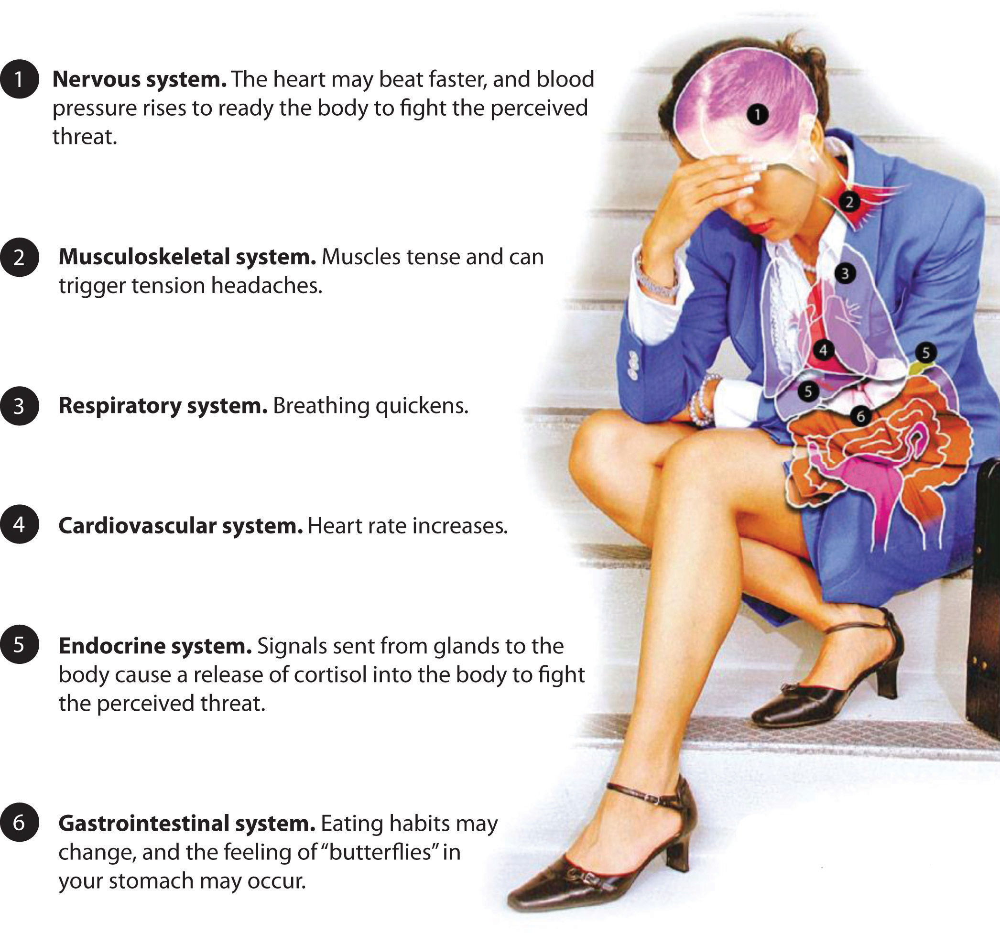

Our bodies go through a number of changes when we are faced with a stressor. From prehistoric times, physical changes in our body had to occur in order to prepare us to handle the stress. For example, we needed to be able to run fast to get away from something that could hurt us or we needed the energy to obtain food. This is called the fight or flight responsePhysiological reactions in the body that enable us to mobilize to deal with a stressful situation.. This concept was developed by Walter Cannon in the 1920s, and he believed that these reactions in the body enabled us to mobilize to deal with a stressful situation.Brian Luke Seaward, Managing Stress: Principles and Strategies (Jones and Bartlett Publishing), 6. More recent research has shown the addition of “freeze” to the response. This occurs when the fight or flight response didn’t work—or we were unable to react quickly enough to fight or flight, and we “play dead” or become immobilized. This response is as natural as fight or flight in our body chemistry. Consider the person attacked by a bear who plays dead and survives. The person couldn’t run (flight) and couldn’t effectively fight against the bear, so the freeze reaction (or the “do nothing,” play dead) reaction can sometimes work. We use the freeze reaction in response to stress triggers at work. For example, we can’t just leave (flight), as we typically need the job to pay our bills; it also may not be worth it to fight, so we freeze in response to the situation. Although this is an oversimplification of the body’s chemistry, it illustrates the point that the flight-fight-freeze response is actually a very prehistoric event. Today, even though our stresses may be different, our body still reacts the same way as it did in prehistoric times. To fully understand how stress impacts us, we need to understand how our bodies handles stress. When our brains initially perceive a threat, a few physiological effects, Figure 3.2 "Physiological Effects of Stress", occur within each system of our bodies.
Figure 3.2 Physiological Effects of Stress
Physically our bodies go through various changes to prepare us for a flight or fight response.
Courtesy of The American Institute of Stress, www.stress.org.
According to a survey of the American Psychological Association, 44 percent of Americans lie awake at night because of stress.American Psychological Association, “Stress in America: Our Health at Risk,” 2011, accessed February 16, 2012, http://www.apa.org/news/press/releases/stress/2011/impact.aspx This is one example of how prolonged episodic stress can affect our personal life and our productivity at work. It is a positive thing for our body to get ready for acute stress. It prepares our body to perform at a higher level. However, long-term chronic stress or episodic acute stress can cause a variety of problems. Those problems are listed in Table 3.1 "Common Effects of Stress on Our Bodies, Moods, and Behaviors".
Table 3.1 Common Effects of Stress on Our Bodies, Moods, and Behaviors
| On Your Body | On Your Mood | On Your Behavior |
|---|---|---|
| Headache | Anxiety | Overeating or undereating |
| Muscle tension or pain | Restlessness | Angry outbursts |
| Chest pain | Lack of motivation or focus | Drug or alcohol abuse |
| Fatigue | Irritability or anger | Tobacco use |
| Disinterest in things we normally enjoy | Sadness or depression | Social withdrawal |
| Stomach upset | ||
| Sleep problems |
Source: Mayo Clinic Staff, “Stress Symptoms, Effects on Body, Feelings and Behavior,” February 19, 2011, accessed February 16, 2012, http://www.mayoclinic.com/health/stress-symptoms/SR00008_D
In the 2011 American Psychological Association Stress survey,American Psychological Association, “Stress in America: Our Health at Risk,” 2011, accessed February 16, 2012, http://www.apa.org/news/press/releases/stress/2011/impact.aspx 42 percent of Americans report anger as a result of stress, while 37 percent report fatigue as a result of stress. Lack of interest, motivation, and energy is reported by 35 percent of Americans. Digestion issues and changes in appetite are also reported. With these being fairly common occurrences, we can see the importance of learning how to manage stress. These symptoms can affect our ability to communicate well and be productive at work. If we do not get enough sleep, we lose interest and motivation and we are not our best at work, which can result in poor human relations with our coworkers, friends, and family. In Section 3.3 "Sources of Stress", we will look at some possible causes of stress and discuss some of the ways we can learn to better handle stress.
Stress can shut down our ability to think rationally and feel emotions. As you know from Chapter 2 "Achieve Personal Success", these two abilities are part of emotional intelligence (self-management and self-awareness). These abilities allow us to identify and then manage our emotions. When we identify our stressor and our emotion around that stressor, we can begin to make plans on how to handle it. Without the ability to identify this emotion, we are not as well equipped to handle the emotions that may come with stress. Without these stress-management skills, we can let our stress get out of control. When stress occurs, the shutting down of our emotions doesn’t allow us to make rational decisions, nor does it allow us to be emotionally available to others. Because of this, stress can affect our ability to communicate and work effectively with people at work. People who are stressed often are impatient, poor listeners, and may lose their sense of humor. These temporary behaviors that occur when we are stressed can impact how others see us, and how well we interact with them. Also consider the effect stress may have on our ability to manage conflict.Stresshacker, “Stress and Emotional Intelligence,” 2012, accessed May 31, 2012, http://www.stresshacker.com/2010/09/eclass-5-stress-and-emotional-intelligence/ If someone is stressed about day-to-day frustrations, such as traffic, bills, workload, and to-do lists, the stress does not allow him or her to manage conflict, as emotions are in a state of confusion. This can lead to poor decision making and thus result in the inability to interact effectively with others. Everyone has stress in both their personal and professional lives. Learning how to manage this stress is one of the first steps in making sure we are mentally prepared to nurture our relationships at work and at home.
This video illustrates how our flight or fight response is similar to that of prehistoric times.